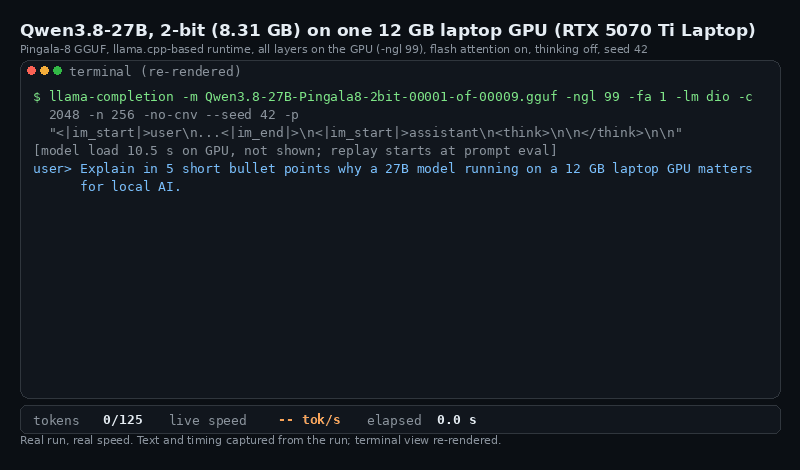

How we fit a 27B model on a 12 GB laptop GPU
In short
- Qwen3.8-27B goes from 53.8 GB of 16-bit weights to an 8.31 GB Pingala-8 file, 84.5% smaller (6.5x). It runs with every layer on one 12 GB RTX 5070 Ti Laptop GPU at 37.7 tokens/s (llama-bench, batch 1).
- Version 2 moves bits between tensor roles and layer depths, following the allocation in DASH-Q's published files. WikiText-2 perplexity fell from 7.34 to 6.89 at the same size, better on 20 of 20 test windows.
- DASH-Q IQ2_XS (8.55 GB) is still better than ours: 6.54, ahead on 20 of 20 windows. Against unsloth UD-IQ2_S (8.37 GB, 7.34) our lower average is not a significant win.
- The file needs our patched llama.cpp runtime on an NVIDIA GPU. Stock llama.cpp, Ollama and LM Studio cannot load it.
The problem: 53.8 GB of weights, 12 GB of memory
Qwen3.8-27B is a 27-billion-parameter model. Its text weights, stored the way the Qwen team ships them at 16 bits each, come to 53.8 GB. That count leaves out the vision tower and the multi-token-prediction block, which we do not ship either.
A model runs at full speed only when its weights sit in GPU memory, next to the cache that holds the conversation. A laptop GPU with 12 GB cannot hold 53.8 GB. Even at 4 bits per weight, the weights alone would be about 13.5 GB (a quarter of 53.8), more than the whole card before any cache. The usual answer is to leave some layers in system RAM, which slows generation to the speed of that slower memory.
We wanted the whole model on the GPU. That means about 2 bits per weight.
What 2-bit means
A weight is one number in one of the model's matrices. At 16 bits it takes 2 bytes. At 2 bits it takes a quarter of a byte, so on its own it could take only 4 different values. No useful format stores weights that crudely. 2-bit formats code small groups of weights together, keep a scale for each block of weights, and store a few sensitive tensors with more bits. The "2-bit" label describes the bulk of the file, not every byte of it.
For our file the arithmetic is simple: 8.31 GB for 53.8 GB of 16-bit weights is 6.5x smaller, or about 2.5 bits per weight averaged over the whole file. The extra half bit pays for the scales, the token embedding and output head, and the tensors that get more than 2 bits.
Fewer bits means rounding error, and the error adds up across 27 billion weights. We measure what that costs with WikiText-2 perplexity, a standard score for how well a model predicts real text; lower is better. Our article on 8 models explains the score in plain words.
Pingala-8 codes each row of weights in groups of 4 with an 8-state trellis code, after a random Hadamard rotation and LDLQ rounding. These ideas come from QuIP, QuIP# and QTIP; the trellis-coded quantization guide explains them. This article is about something else: how many bits each tensor gets.
The 8.31 GB file
The release is 8,314,241,600 bytes in 9 parts on Hugging Face. On our one test machine, an RTX 5070 Ti Laptop GPU with 12 GB under WSL2, it loads with every layer on the GPU (-ngl 99) and leaves room for a 4,096-token context. The 12 GB guide and the VRAM requirements page show the memory arithmetic for longer contexts and other cards. We have not run this file on any other GPU.
The real-speed demo

The clip replays one chat run on that laptop: every token appears when it was captured, nothing is sped up, and only the terminal view is redrawn. It shows two speeds on purpose. 37.7 tokens/s is the llama-bench generation test. 31.63 tokens/s is the runtime's own count for this chat answer. They are different measurements, we have not yet looked into the gap, and we report both.
What we changed in version 2: bits by role and depth
A transformer is a stack of layers, and each layer holds several kinds of matrix: the attention projections (attn_qkv builds the queries, keys and values), the feed-forward matrices (ffn_up, ffn_gate, ffn_down), and in Qwen3.8's linear-attention layers an output projection called ssm_out. We call the kind of matrix its role, and its position in the stack its depth. A 2-bit file does not have to give every tensor the same number of bits. The question is where the extra bits do the most good.
Version 1 copied the layout llama.cpp uses for its IQ2_XXS type. That layout spent 4.5 bits per weight on attn_qkv, and the rest of the budget had to come from somewhere else.
DASH-Q, a set of 2-bit GGUF files published by jkim96, splits the budget differently. We read the type of every tensor out of their Qwen3.8-27B file and built the same plan for ours: a bit budget for each role in each band of layers, from early to late. Same total bytes, different placement; the change was the allocation, not the coding method.
The result, on the same 20 WikiText-2 windows:
- Version 1: perplexity 7.34.
- Version 2: perplexity 6.89, lower on all 20 windows, at the same 8.31 GB.
The allocation idea is DASH-Q's, not ours. What we added is the evidence that the same plan helps a different coder.
The smaller model taught us the rest
We then tried to copy the 27B plan onto Qwen3.5-2B. It did not help: perplexity 15.80 against 15.62 for version 1, better on only 22 of 70 windows. The 27B plan spent too much on the late feed-forward layers (4.1 bits per weight) and starved ssm_out (2.6) for a model of this size. A plan learned on one model is not a plan for every model.
The second gap was the embedding. In the 2B, the token embedding and the output head are the same matrix. DASH-Q stores it at Q4_K, 286 MB. We stored it at Q5_K, 350 MB. At equal file size, that left DASH-Q 489 MB for the other matrices against our 429 MB, 14% more.
So the third try moved the embedding to Q4_K, which freed 61.6 MB, and used DASH-Q's own 2B plan for the rest. That file scored 14.06 at 778,189,408 bytes, slightly smaller than version 1 and better on 70 of 70 windows, a 10.0% drop in perplexity. It is now version 2 of our Qwen3.5-2B. The lesson we wrote down: the embedding and output head are part of the byte budget, so copy the leading file's whole-file allocation, not just its large matrices.
What failed: water-filling
We also tried to derive an allocation ourselves instead of copying one. Water-filling is the textbook answer from rate-distortion theory: measure how much error each tensor suffers at each bit rate, then hand out bits where they cut the most error, until every tensor gains the same from one more bit. We used a per-tensor error measure from our encoder.
We tested it where tests are cheap, on Qwen3.5-0.8B, at about 35 minutes of GPU time in all:
| Qwen3.5-0.8B plan | Perplexity | vs DASH-Q plan |
|---|---|---|
| DASH-Q role and depth plan | 23.72 | reference |
| Water-filling, variant 1 | 26.72 | +0.120 nats/token |
| Water-filling, variant 2 | 25.71 | +0.081 nats/token |
WikiText-2, lower is better. The last column is the paired per-window loss difference; positive means worse than the DASH-Q plan.
Both variants lost clearly, so we stopped and logged the result. We do not know exactly why. One plausible reason is that the error of a tensor measured on its own is a poor guide to what the whole model loses when that tensor gets fewer bits. Either way, the DASH-Q plan won, and that is the one we shipped.
The honest comparison
Here are the five Qwen3.8-27B files we measured on the same text, the same 20 windows and the same laptop. Lower is better.
| 2-bit file | Size | PPL | Against ours (v2) |
|---|---|---|---|
| DASH-Q IQ2_XS | 8.55 GB | 6.54 | Better than ours on 20/20 windows |
| Pingala-8 v2 (ours) | 8.31 GB | 6.89 | |
| unsloth UD-IQ2_S | 8.37 GB | 7.34 | Ours lower on average; not significant (9/20) |
| Pingala-8 v1 (ours) | 8.31 GB | 7.34 | v2 better on 20/20 |
| llama.cpp IQ2_XXS, same imatrix | 8.43 GB | 7.88 | Ours lower |
WikiText-2 test, 4,096-token windows, the first 20 windows for every file. Every window is in the eval dataset and ranked on the 2-bit GGUF leaderboard.
DASH-Q is better. Its lead over us is 0.052 nats per token, with a 95% interval of plus or minus 0.012, and it holds on every window. That is about 5% in perplexity, for 0.24 GB more file.
The unsloth comparison is the opposite case. Our average is lower, 6.89 against 7.34, but we are better on only 9 of 20 windows, and the paired interval (-0.064 plus or minus 0.075) includes zero. We do not count that as a win. Our benchmarking article explains the paired test and why a lower average is not enough.
We did not compare speed with the rival files. On our GPU their IQ1_S, IQ2_S and IQ3_S tensors had to run on the CPU (the NaN page explains why), so a speed number from our machine would be unfair to them. Both rival files use standard llama.cpp types and load in stock llama.cpp; ours does not.
So when is ours the right file? When you run our runtime on an NVIDIA card and want the smallest of the files that fit, and one measured fully on the GPU. If quality comes first, or you want stock llama.cpp, Ollama or LM Studio, take DASH-Q.
How to run it
Build llama.cpp at commit 7ac59a6 with the Pingala-8 CUDA patch and the Qwen3.5 loader change, then download the 9 parts and pass part 1:
git clone https://github.com/Genrius-AI/pingala8-llm
git clone https://github.com/ggml-org/llama.cpp && cd llama.cpp
git checkout 7ac59a6e3ad851cd41af00f678effab0598ba9a8
git apply ../pingala8-llm/patches/llama_cuda_vs_7ac59a6.patch
git apply ../pingala8-llm/patches/q35_loader_count_delta.patch
cmake -S . -B build -DGGML_CUDA=ON -DCMAKE_CUDA_ARCHITECTURES=120 -DCMAKE_BUILD_TYPE=Release -DLLAMA_OPENSSL=OFF
cmake --build build -j8 --target llama-cli llama-perplexity llama-bench
hf download Genrius-AI/Qwen3.8-27B-Pingala8-2bit --local-dir qwen3.8-27b-pingala8
export GGML_F44=4 GGML_F44_BATCH=2 GGML_VR_NATIVE=1 GGML_VRC_V=5 GGML_VRC_NWP=8 GGML_VR_RL=1 GGML_VR_PRMG=1 GGML_VR_PPC=2
./build/bin/llama-cli -m qwen3.8-27b-pingala8/Qwen3.8-27B-Pingala8-2bit-00001-of-00009.gguf -ngl 99 -c 4096The flag 120 matches our RTX 50 laptop GPU; use your card's value. This is the text model only, with no vision tower and no multi-token-prediction block, and it has not been tested with the one-click build. The model card also has the exact perplexity command.
What we take from this
- Where the bits go mattered as much as how each weight is coded. The same coder gained 7.34 to 6.89 from a better plan.
- Copy the whole plan of the file that leads, including the embedding, and test it on the model you ship.
- Kill ideas on a small model first. Water-filling cost about 35 GPU minutes to rule out.
- DASH-Q still leads at this size. Closing that gap is the next job.
Models, data and guides
- Qwen3.8-27B Pingala-8 2-bit (8.31 GB) and the other models: Llama-3.1-8B, Qwen3.5-4B, Qwen3-4B, Qwen3.5-2B, Qwen3-1.7B, Qwen3.5-0.8B, Qwen3-0.6B
- 2-bit GGUF leaderboard and the per-window eval dataset
- Guides: Qwen3.8-27B on a 12 GB GPU, Qwen3.8 27B VRAM requirements, Qwen3.5-2B under 1 GB, NaN perplexity on RTX 50, what perplexity is
- Code, patches and logs on GitHub and the paper, DOI 10.5281/zenodo.23481757 (the Qwen3.8-27B and Qwen3.5-2B version 2 numbers are newer than the paper)
More articles
- 8 open models, 77-85% smaller: what 2-bit quantization costs and what it keeps
- Benchmarking 2-bit GGUFs fairly: paired windows, and the NaN trap on RTX 50 GPUs
- How we fit Qwen3-4B into 1.24 GB without retraining
Questions, corrections or a model you want compressed next? Open a GitHub issue.